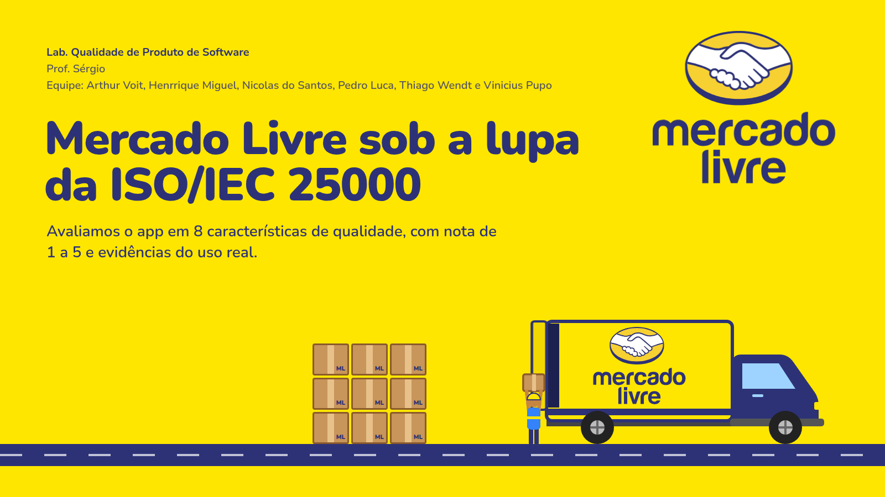

PDF | 8 slides | 1,2 MB
Mercado Livre sob a lupa da ISO/IEC 25000
R$ 0
Download grátis
- 8 características de qualidade avaliadas
- Notas de 1 a 5 com evidências
- Média final: 4,4 de 5
Equipe: Arthur Voit, Henrrique Miguel, Nicolas do Santos, Pedro Luca, Thiago Wendt e Vinicius Pupo
Trabalho acadêmico da Univille, sem vínculo com o Mercado Livre. A marca pertence aos seus donos.